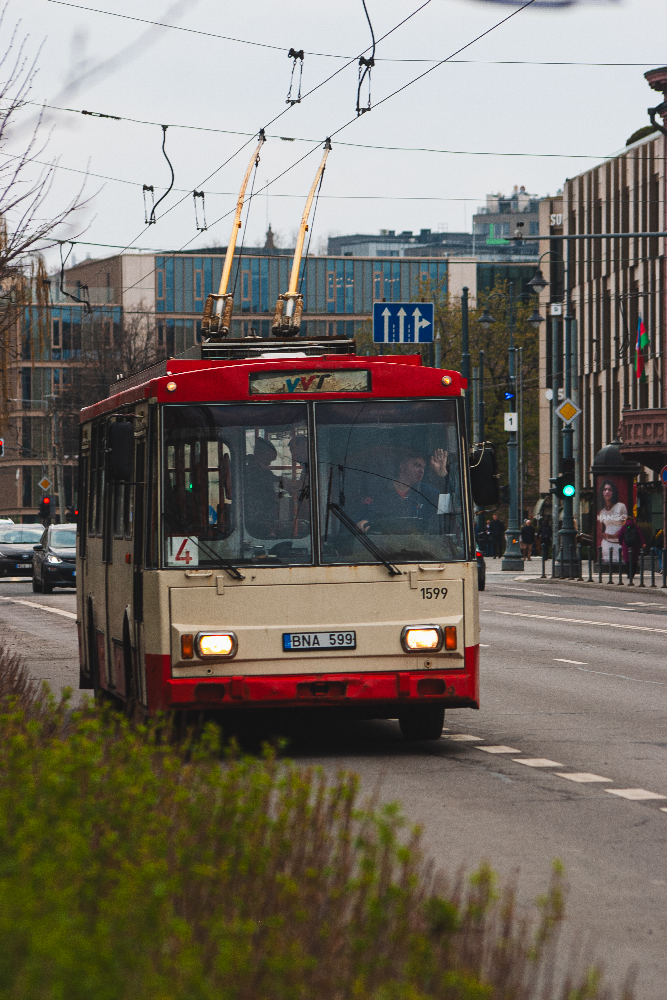
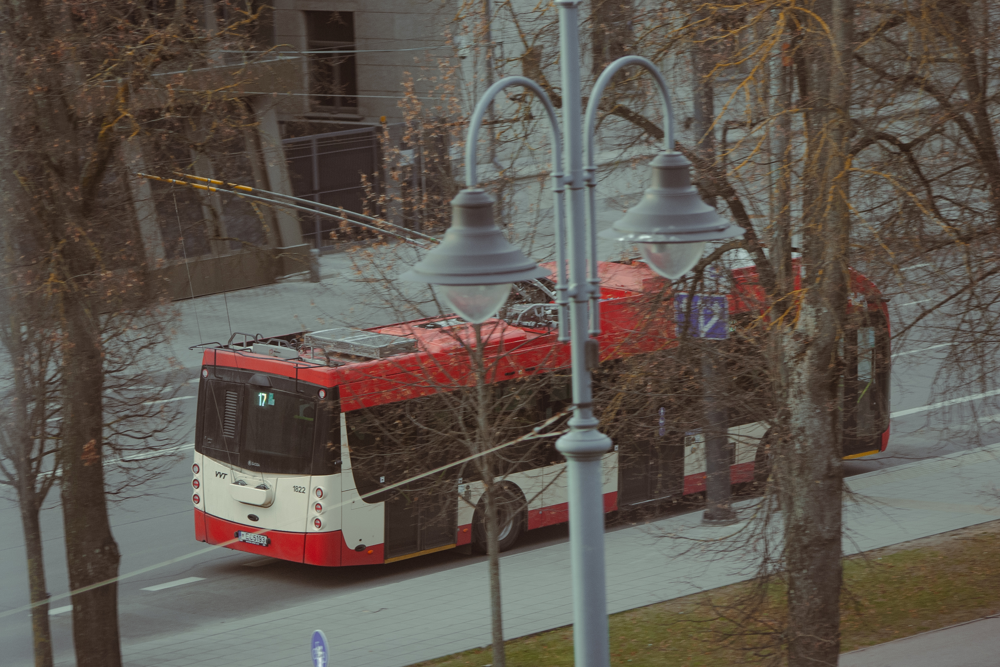

Manto pasaulis kitu kampu
Sveiki atvykę į mano svetainę kur pamatysite mano pasaulį kitu kampu
Kodėl mano pasaulį reiktų matyti kitu kampu?
Žinokit net pats atsakymo į šitą klausimą nežinau, bet i guess we live and we learn.
O dabar 5 faktai apie senuosius troleibusus ir jų pranašumus prieš naujuosius
- Daugiau sėdimų vietų. Lygios grindys be aukštų ratų arkų leidžia sutalpinti daugiau patogių sėdynių į priekį.
- Paprastesnis remontas. Nėra sudėtingos elektronikos – smulkų gedimą vairuotojas ar meistras sutvarko vietoje per kelias minutes.
- Minkštesnis važiavimas per duobes. Aukštesnė važiuoklė ir didesnės padangos geriau sugeria gatvių nelygumus nei žemagrindis kėbulas.
- Geresnis matomumas. Sėdima aukščiau, o dideli langai eina per visą saloną, todėl lengviau matyti miestą ir stoteles.
- Ilgaamžiškumas. Tvirtas senasis kėbulas atlaikė 30–40 metų žiemų ir druskų, o nauji modeliai projektuojami tik ~15 metų.

Škoda 14Tr troleibusas

Škoda 32Tr SOR troleibusas